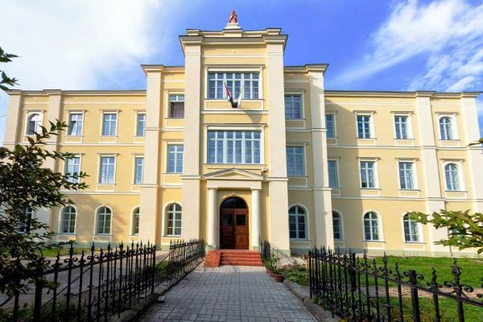
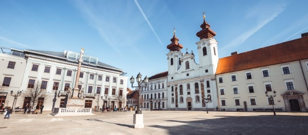

Tanulmányok
Az általános iskolát Sümeg kezdtem (a legközelebbi város), majd Keszthelyen fejeztem be a Ranolder János Római Katolikus Általános Iskolában.
Az általános iskola elvégzése után a győri Czuczor Gergely Bencés Gimnázium és Kollégium tanulója voltam. Nagyon meghatározó volt számomra az ott töltött 4 év, ugyanis rengeteg kapcsolatra, barátra tettem szert, és a bencés szerzetesek által átadott értékek nagyon fontosak a számomra.
Jelenleg a Budapesti Műszaki és Gazdaságtudományi Egyetem hallgatója vagyok gépészmérnöki szakirányon.